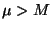
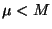

An important characteristic of a population is its symmetry or lack of symmetry . Lack of symmetry is called skew. Many inferential statistical procedures depend on the data being fairly symmetrical and therefore the presence of skew becomes an important concept. The relationship betwen the mean and median can be used to describe these concepts.
If the population (or data) is symmetrical or balanced there is no skew. In this case the mean and median are approximately equal. We picture a symmetrical population with the relation between the mean and the median in figure 1.
Data which has a longer tail to the right hand side is skewed right or positively skewed. Personal incomes would generally be skewed right. Most of a population would tend to have personal incomes towards the lower end of the scale, however there would be a significant long tail towards the upper end . In this situation the mean will exceed the median - that is . Lifetimes, of either produced items or living things, tend also to be skewed right. This is not obvious but can be shown to hold. In general the mean lifetime of an item will exceed the median lifetime. The median lifetime would be the time when 50% of the items have failed or died. A skewed right population with the relation between the mean and the median is pictured in figure 2.
The final case is where there is a longer tail to the left hand side. This is called skewed left or negatively skewed. College grades, in most cases, are somewhat skewed left. In this case the median exceeds the mean - . We picture a skewed left population in figure 3.
The measure of skewness that is used is....